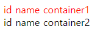

HTML(Hyper Text Markup Language)
- 웹브라우저가 등장하면서 웹문서를 표현하기 위한 언어
- 로직이 실행이 안되고 계산이 안되기 때문에 프로그래밍 언어라고 할 수없다.
- HTML은 워드 문서와 같다.(워드문서는 XML HTML은 친척정도?)
- 문서의
의미와 전체구조를 담당한다. - HTML5
- 영상과 음성을 처리하기 위한 멀티미디어 요소가 추가됐다.
- 구조적인 요소가 추가됐다.
- 표현을 담당하던 태그가 삭제되고 의미를 담은 태그가 추가되었다.
- 주의할 점
- 태그마다 기본 스타일이 있다. (li은 padding속성이 자동적용됨, 해결방안 ResetCss 사용)
- 브라우저마다 기본 스타일이 다르다.(버튼 모양도 다름 해결방안 NomalizeCss)
CSS(Cascading Style Sheets)
- 초기 HTML이 문서의 뼈대와 위치를 모두 정의했으며, 수정 사항이 발생했을 때 비슷한 문서들을 한 번에 수정하지 못하고 하나씩 수정해야 되기 때문에 불편함을 겪었다. 그래서 HTML의 내용과 표현을 분리하여 CSS가 탄생하게 되었다.
- 그 문서의 표현을 의미한다.
어디에스타일을 적용할 것인가?어떻게스타일을 적용할 것인가?어떤스타일을 적용할 것인가?
- 사용법
- style 태그 이용
- 인라인 이용 속성으로 style
- 외부파일 만들어서 link태그로 불러오기
id와 class
- id: 문서 안에 있는 단 하나의 요소이다.
- class: 문서 안 복수의 요소이다.
id가 중복된다면??
1
2
3
4
5
6
7
8
9
10
11
12
13
14
15
//index.html
//...
(<body>
<div id="container">id name container1</div>
<div id="container">id name container2</div>
<script src="index.js"></script>
</body>)(
//...
//index.js
() => {
document.getElementById("container").setAttribute("style", "color:red");
}
)();

먼저 선언된 id만 작동한다!
CSS 선택자 종류
| 이름 | 명령어 | 특징 |
|---|---|---|
| 전체 선택자 | * | HTML 문서 내의 모든 요소를 선택한다. html 요소를 포함한 모든 요소가 선택된다. (head 요소도 포함된다) |
| 태그 선택자 | 태그명 | 지정된 태그명을 가지는 요소를 선택한다. |
| ID 선택자 | #id | id 값을 지정하여 일치하는 요소를 선택한다. id 값은 중복될 수 없는 유일한 값이다. |
| Class 선택자 | .class | class 어트리뷰트 값을 지정하여 일치하는 요소를 선택한다. class 어트리뷰트 값은 중복될 수 있다. |
| 속성 선택자 | 선택자[속성] | 지정된 속성을 갖는 모든 요소를 선택한다. |
| 후손 선택자 | 선택자A 선택자B | 선택자A의 모든 후손(하위) 요소 중 선택자B와 일치하는 요소를 선택 |
| 자식 선택자 | 선택자A > 선택자B | 자손 선택자는 선택자A의 모든 자식 요소 중 선택자 B와 일치하는 요소를 선택한다. |
| 형제 선택자 | 선택자A + 선택자B | 형제 관계에서 뒤에 위치하는 요소를 선택할 때 사용 |
| 가상 클래스 선택자 | : | 요소의 특정 상태에 따라 스타일을 정의할 때 사용 |
| 가상 요소 선택자 | :: | 요소의 특정 부분에 스타일을 적용하기 위하여 사용 |
DOM(Document Object Model)
HTML의 추상적이 객체가 모델링되어 객체로 만들어진 것
탄생배경 및 특징
- JavaScript가 탄생하면서 같이 등장
- HTML 문서와 상호작용이 가능
- 초창기엔 접근 가능한 태그가 많지 않았음
- 표준안은 1998년에 등장했고 대다수의 브라우저에 적용되기까지 시간이 오래 걸렸다.
- 점차 발전하여 HTML문서를 직접 수정까지도 가능하게 됨
- DOM은
트리구조로 되어있다. (문서, 요소, 속성, 텍스트 노드로 이루어짐) - DOM Tree 순회는
전위순회(PreOrder)로 이루어짐
DOM트리가 렌더링 되는 순서
- 브라우저는 HTML을 읽고 파싱 후 DOM트리를 구성한다.
- StyleSheets를 파싱하여 StyleRules를 만든다.(CSSOM트리)
- DOM트리에 StyleRules를 적용한다.(이 과정을 Attachment라고함)
- Layout과정을 통해
Render Tree(DOM Tree + CSSOM)를 구축한다. - 실제 화면에 그려준다.
Virtual DOM
탄생배경 및 특징
- DOM객체를 변경할 때마다 DOM을 구축하고 다시 Render Tree를 구성한다는 것이 문제가 발생한다. 이렇게 개발자가 일일이 코드를 최적화해주는 것은 쉽지 않고, 코드는 점차 더러워 질 것임!
- 실제 DOM Tree는 JS객체로 만든 것으로 필요한 정보만 담아 만들어진다. 이벤트나 DOM이 수정되면 직접 DOM을 수정하지 않고 가상DOM에서 바뀌는 부분만 수정하여 브라우저 렌더링 프로세스를 줄여준다. (React, Vue 등)
오해
- 가상DOM은 DOM보다 빠르다?
- NO! 유지보수 용이한 어플리케이션을 만들도록 도와주고 대부분의 유스케이스에 충분히 빠를 뿐이다!
함수형 자바스크립트 기본기
평가
코드가 계산되어 값을 만드는것
1
2
3
4
5
6
7
1 //1
1 + 2 // 3
(1 + 2) + 4 // 3 + 4 => 7
[1, 2] // [1, 2]
[1, 2 + 3] // [1, 5]
[1, [2, 3]] // [1, Array(2)]
[1, 2, ...[3, 4]] // [1, 2, 3, 4]
일급
- 값으로 다룰 수 있다.
- 변수에 담을 수 있다.
- 함수의 인자로 사용될 수 있다.
- 함수의 결과로 사용될 수 있다.
1
2
3
const a = 10; //a를 변수에 담을 수 있고 값으로 다룰 수 있다.
const add10 = (a) => a + 10; //a: 함수의 인자로 사용될 수 있다. // a+10 함수의 결과로 사용될 수 있다.
const r = add10(a); // 20
일급 함수
- JS에서는 함수는 일급이다. = 함수를 값으로 다룰 수 있다.
- 조합성과 추상화의 도구
1
2
3
4
5
6
7
8
const add5 = (a) => a + 5; //함수를 값으로 다룰 수 있음 //함수로 출력됨 a=>a+5
add5(5); // 10 함수를 평가해서 다른 값으로 변경 가능
const go = () => () => 1; // 이 함수의 결과는 함수
go(); // () => 1
const go2 = go(); //다른 함수에 담을 수 있다.
go2(); // 1 원하는 시점에서 평가해서 결과를 만들 수 있다.
고차 함수
함수를 값으로 다루는 함수
- 함수를 인자로 받아서 실행하는 함수
1
2
3
4
5
6
7
8
9
10
11
12
13
14
const go1 = f => f(1);
const add2 = a => a + 2;
go1(add2));
//go1의 f는 add2라는 함수를 받아서 실행 시켜주고 있음
// f = (a) => a+2
// f = (1) => 1 + 2; => 3
const times = (f, n) => {
let i = -1;
while(++i < n) f(i);
}
times(log, 3); // 0 1 2
times(a => log(a+10), 3); // 10 11 12
//함수를 인자로 받아서 함수안에서 적용하는 함수 어플리케이티브 프로그래밍
- 함수를 만들어 리턴 하는 함수(클로저를 만들어 리턴하는 함수)
1
2
3
4
5
const addMaker = (a) => (b) => a + b; //함수를 리턴하는 함수 클로저란 2번a가 1번 a를 계속 기억하고 있다는 소리
//1번 2번
const add10 = addMaker(10); // b => a + b
add10(5); //15
add10(10); //20
🚑깨달은 점
HTML과 CSS를 알고 있었지만 내가 직접 실습을 통해 id가 두개이상일 경우 확인도 해보고 DOM객체를 다뤄보는 경험이 인상적이었다. 그리고 자료구조에서 Tree를 배운 후에 DOM을 접근하니깐 더욱 이해가 되었다.(feat,전위 순회) 😎
DOM의 렌더링 순서를 모든 구성을 하나씩 외웠었는데 그렇지 않고 크게 DOM트리, CSSOM, Render트리로 이해하니 훨씬 이해가 많이 되었다.
평가와 일급이라는 단어가 많이 사용해보지 않았기에 강의를 2번정도 더 돌려봤다. 그래도 아직은 익숙하지 않아서 계속 돌려봐야 겠지만 역시.. 예시를 통해 공부를 하니 이해하는데 도움이 많이 되었다. 계속 강의보면서 손 놀고 있는데 어떻게든 움직이도록 노력해야겠다..!😅